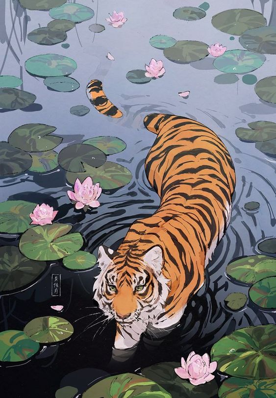

Hana_tora
Line Up :
RisingVex
Rgg_Squid
Howlite...
8carti
Azura
Kay
| Statistiques | |||||||
|---|---|---|---|---|---|---|---|
| Joueur | Manches Gagnées | Manches Perdues | Kills | Assists | Morts | Points d'Encrages | Armes Spéciales |
| RisingVex | 17 | 4 | 215 | 68 | 126 | 22 878 | 61 |
| Rgg_Squid | 17 | 4 | 225 | 55 | 126 | 25 089 | 76 |
| Howlite... | 15 | 3 | 138 | 43 | 72 | 16 494 | 51 |
| 8carti | 12 | 4 | 168 | 55 | 94 | 20 310 | 79 |
| Azura | 1 | 2 | 23 | 8 | 13 | 2468 | 5 |
| Kay | 5 | 0 | 65 | 14 | 26 | 4 580 | 16 |
| Hana_tora | 17 | 4 | 613 | 180 | 362 | 91 819 | 233 |
| Pourcentages | ||||||||
|---|---|---|---|---|---|---|---|---|
| Joueur | Participation | Manches Gagnées | Manches Perdues | Kills | Assists | Morts | Points d'Encrages | Armes Spéciales |
| RisingVex | 100% | 81% | 19% | 35.1% | 37.8% | 34.8% | 24.9% | 26.2% |
| Rgg_Squid | 100% | 81% | 19% | 36.7% | 30.6% | 34.8% | 27.3% | 32.6% |
| Howlite... | 85.7% | 83.3% | 16.7% | 22.5% | 23.9% | 19.9% | 18% | 21.9% |
| 8carti | 76.2% | 75% | 25% | 27.4% | 30.6% | 26% | 22.1% | 32.6% |
| Azura | 14.3% | 33.3% | 66.7% | 3.8% | 4.4% | 3.6% | 2.7% | 2.1% |
| Kay | 23.8% | 100% | 0% | 10.6% | 7.8% | 7.2% | 5% | 6.9% |
| Hana_tora | 100% | 81% | 19% | 100% | 100% | 100% | 100% | 100% |
| Moyennes | |||||
|---|---|---|---|---|---|
| Joueur | Kills | Assists | Morts | Points d'Encrages | Armes Spéciales |
| RisingVex | 10.24 | 3.24 | 6 | 1 089.43 | 2.9 |
| Rgg_Squid | 10.71 | 2.62 | 6 | 1 194.71 | 3.62 |
| Howlite... | 7.67 | 2.39 | 4 | 916.33 | 2.83 |
| 8carti | 10.5 | 3.44 | 5.88 | 1 269.38 | 4.94 |
| Azura | 7.67 | 2.67 | 4.33 | 822.67 | 1.67 |
| Kay | 13 | 2.8 | 5.2 | 916 | 3.2 |
| Hana_tora | 29.19 | 8.57 | 17.24 | 4 372.33 | 11.10 |